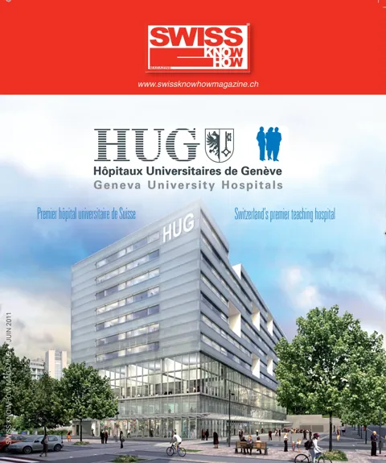

« Les problèmes de travail en équipe et les défauts de communication sont deux causes majeures d'accidents. »— Domizio Suva
Texte intégral
Aujourd’hui, personne ne peut ignorer la réalité de l’erreur médicale. Aux États-Unis, elles causent plusieurs milliers ou dizaines de milliers de morts par année, dont la moitié survient dans les blocs opératoires. Pour améliorer la sécurité des soins, après une première expérience menée par le service d’obstétrique des Hôpitaux Universitaires de Genève en salle d’accouchement, le département de chirurgie des HUG a introduit en 2009 une formation, « Crew Resource Management » (CRM), inspirée de l’aviation. Le Dr Domizio Suva, médecin adjoint du service de chirurgie orthopédique et traumatologie de l’appareil locomoteur, en est l’un des instigateurs. Il répond à nos questions.
Quelles sont les causes d’erreurs médicales ?
Elles sont multiples. Les dernières études remettent en cause l’idée que le risque d’accident est exclusivement lié à l’habileté du chirurgien, à l’état de santé du patient ou à la complexité de l’opération. En réalité, de nombreux facteurs individuels ou organisationnels interviennent dans la survenue d’un incident au bloc. En particulier, les problèmes de travail en équipe et les défauts de communication sont deux causes majeures d’accidents.
De vrais crashs opératoires, comme des erreurs de site ou de côté, par exemple opérer la mauvaise jambe, sont heureusement exceptionnels. Il est très difficile de sensibiliser les chirurgiens au fait que cela pourrait leur arriver, car ce sont des événements extrêmement rares.
Plus fréquents sont en revanche des incidents liés à un manque d’implants ou des boîtes d’instruments qui ne sont pas complètes, et cela est dû à une communication insuffisante. Ces erreurs sont généralement rattrapées à temps, mais cela témoigne d’un fonctionnement non optimal, sans compter un retard possible dans le déroulement des interventions chirurgicales. L’amélioration de la cohésion des équipes et de la communication est donc indispensable pour diminuer le nombre d’incidents durant une procédure chirurgicale.
D’où vient la formation CRM Swiss-HUG ?
Le « Crew Resource Management » est une méthode de formation appliquée dans les systèmes où l’erreur humaine peut avoir des effets dévastateurs. Utilisé principalement pour améliorer la sécurité aérienne, le CRM se concentre sur la communication interpersonnelle, le leadership et la prise de décision dans un cockpit. Ce modèle peut être appliqué à la chirurgie, car il y a de nombreux points communs entre la médecine et l’aviation. Ce sont des professions à haut risque, nécessitant une prise de décision rapide, avec des horaires irréguliers et la pression du stress. Sans oublier que les erreurs peuvent avoir des conséquences irréversibles.
La compagnie aérienne Swiss possède une très grande expérience dans la gestion du risque et la formation des équipages. L’idée était d’utiliser leurs connaissances dans le CRM et de les transposer au domaine de la chirurgie. Ainsi est né le cours CRM Swiss-HUG qui a débuté en octobre 2009 et est planifié jusqu’en été 2012. Plus de 150 collaborateurs ont déjà été formés.
Comment se déroule la formation ?
Axée sur les compétences sociales comme la communication, la coopération et le travail en équipe, elle n’intervient pas au niveau des capacités techniques des participants. Le CRM est un concept très large qui englobe aussi la gestion du risque, la prise de décision et le leadership. Pour notre formation d’une journée, nous avons choisi de nous concentrer sur l’aspect communication et coopération. Le cours s’adresse à des groupes mixtes présentant la même configuration que les équipes qui travaillent en bloc, soit des chirurgiens, des anesthésistes, des infirmier(e)s, des aides de salle, des instrumentistes, des transporteurs et des techniciens. Ils sont entre 10 et 12, encadrés par deux modérateurs, un instructeur-pilote de Swiss et moi-même, en tant que chirurgien formé en éducation thérapeutique.
Nous nous référons le plus possible à des réalités pratiques. Sous forme d’ateliers interactifs, les participants discutent de situations problématiques ou d’incidents dans lesquels ils ont été impliqués. Ces échanges se font sous le sceau de la confidentialité et du non-jugement. Tous ont été confrontés de près ou de loin à des problèmes. Le fait de pouvoir en parler dans un milieu sécurisé et sans jugement permet de faire avancer les choses.
Cette formation permet également de réunir des personnes qui travaillent ensemble dans un bloc opératoire dans un autre contexte que l’urgence ou l’intervention chirurgicale et de mettre en contact les différents corps de métier. Nous offrons ainsi la possibilité d’enrichir les contacts entre des gens qui, souvent, ne se connaissent pas. Les participants doivent avoir conscience qu’ils ont un but commun, soigner le patient, et qu’il faut laisser les tensions à l’extérieur du bloc. Le cours aborde aussi les problèmes de communication qui peuvent parfois être source d’ambiguïtés ou d’erreurs d’interprétation.
Quel succès rencontre la formation ?
D’après les premières constatations, le taux de satisfaction chez les participants est très élevé. La grande majorité des participants a apprécié le contenu et tous ont estimé avoir acquis de nouvelles notions relatives à la communication, au travail en équipe et à la gestion du stress. En résumé, nous pouvons dire que la formation CRM améliore la collaboration entre tous les intervenants au bloc et diminue les risques techniques et logistiques.
Cette formation initiée aux HUG connaît d’ailleurs un grand succès hors de nos murs. Le projet a été présenté dans les hôpitaux du Jura, à la clinique romande de réadaptation à Sion, au CHUV, ainsi que dans des établissements à l’étranger.
Texte paru dans Swiss Knowhow – HUG Hôpitaux Universitaires de Genève 2011, p. 82-85, tel que publié dans l'édition imprimée. En cas d'écart, la version imprimée fait foi.
Personnes citées
- Domizio SuvaMédecin adjoint, service de chirurgie orthopédique et traumatologie de l'appareil locomoteur (HUG)

Paru dans
Swiss Knowhow – HUG Hôpitaux Universitaires de Genève 2011
2011 · page 82-85 · article original en français
Signaler une erreur Lire l'article complet PDF